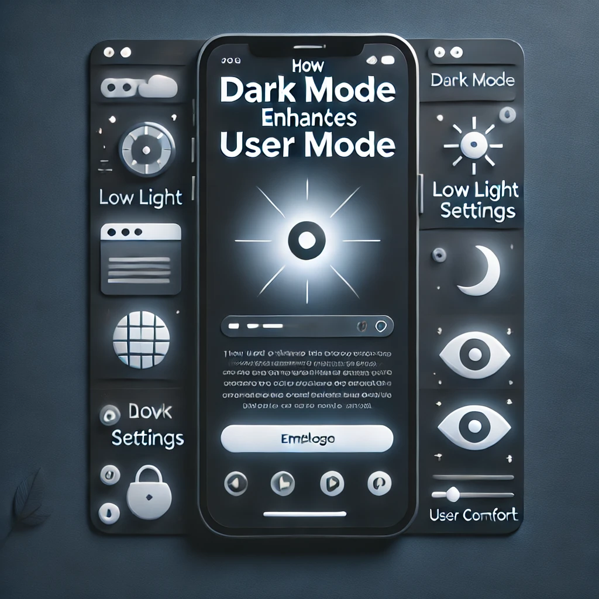
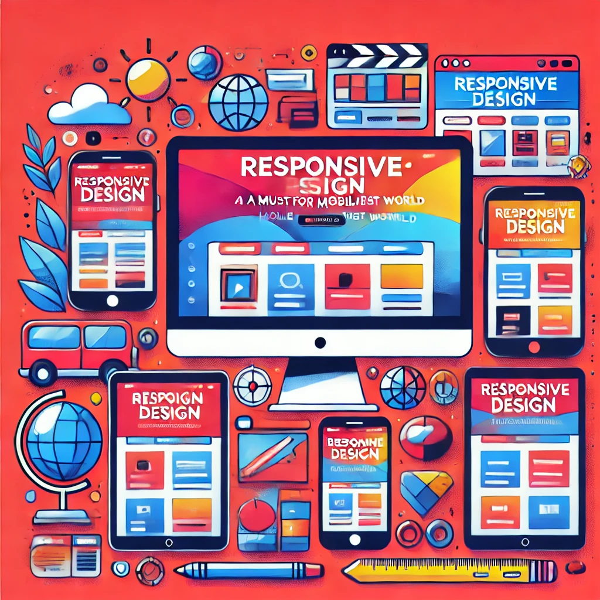
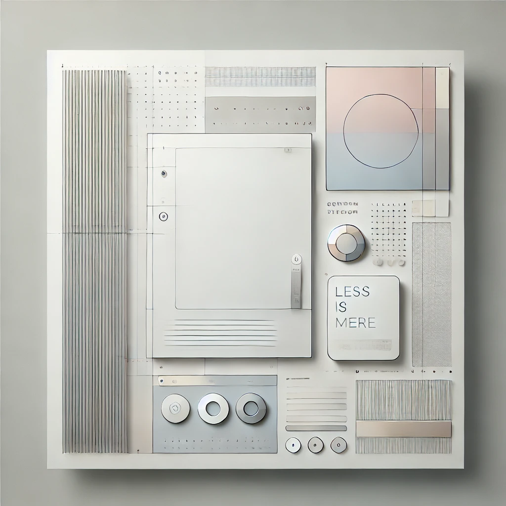
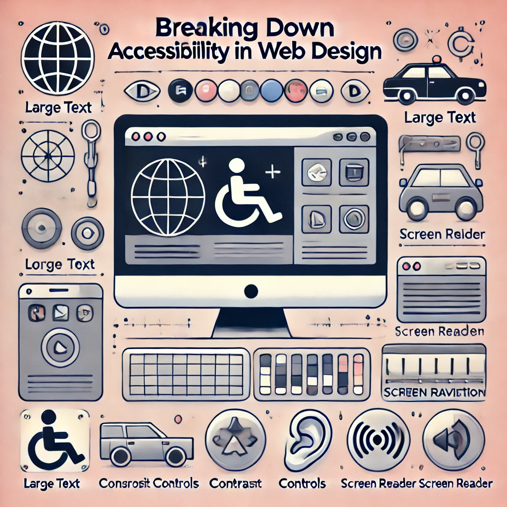

The Future of UX: Personalization and AI
Aug 28

Artificial intelligence is revolutionizing how users interact with digital products. Discover how personalized UX is shaping the future of design.
Continue readingAug 28
Artificial intelligence is revolutionizing how users interact with digital products. Discover how personalized UX is shaping the future of design.
Continue readingNov 11
With the growing preference for dark mode, this post explores how it improves visual comfort and boosts user engagement across devices.
Continue readingMay 21
Micro-interactions may be small, but they have a big impact on how users interact with apps and websites. Here’s how to leverage them effectively.
Continue readingJuly 25
With mobile traffic on the rise, responsive design is essential. We break down the key principles that ensure your site adapts beautifully to any screen.
Continue readingSep 15
As digital interfaces evolve, minimalism is gaining popularity for its focus on user-friendly layouts. Learn why less is more in modern UX design.
Continue readingNov 7
Creating inclusive web experiences is more important than ever. This post covers the best practices for making your site accessible to everyone.
Continue reading